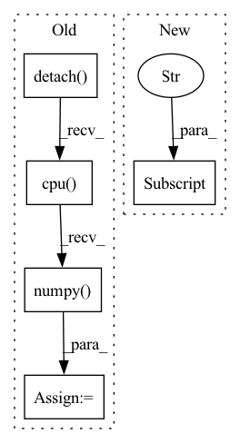

Pattern ID :25930
Before Change
pred = torch.ones_like(scores)
pred[scores <= .5] = 0
y_pred = pred.cpu().numpy().flatten()
auc_scores = scores.detach().cpu().numpy() .flatten()
res = {
"accuracy": accuracy_score(y_true, y_pred),After Change
if scores.shape[1] == 2:
auc_scores = scores[:, 1].detach().cpu().numpy().flatten()
if len(set(y_true)) == 2:
res["auc"] = roc_auc_score(y_true, auc_scores).astype(float)
else:
res["auc"] = 0.5 //TODO: warning
return resIn pattern: SUPERPATTERN
Frequency: 7
Non-data size: 5
Instances Fragment ID: 78341035
Project Name: makgyver/gossipy
Commit Name: 31a93a404f8bfba3869c5eb733962a438f4806f0
Time: 2021-08-29
Author: mak1788@gmail.com
File Name: gossipy/model/handler.py
M Class Name: TorchModelHandler
N Class Name: TorchModelHandler
M Method Name: evaluate(2)
N Method Name: evaluate(2)
M Parent Class: ModelHandler
N Parent Class: ModelHandler
M File Name: gossipy/model/handler.py
N File Name: gossipy/model/handler.py
M Start Line: 93
M End Line: 103
N Start Line: 99
N End Line: 123
Before Change
self.sbiobert_model.eval()
encoded_layers, test = self.sbiobert_model(preprocessed_sentence, segments_tensors)
sentence_encoding = encoded_layers[-1].squeeze().mean(axis=0)
embedding = sentence_encoding.detach().cpu().numpy()
return embedding
After Change
with torch.no_grad():
last_hidden_state = self.sbiobert_model(**preprocessed_sentence.to(self.device))[0]
embedding = self.masked_mean(last_hidden_state,
preprocessed_sentence["attention_mask"] )
return embedding.squeeze().cpu().numpy()
Fragment ID: 78341051
Project Name: bluebrain/search
Commit Name: 6eb30c8b3e77791ee4e407dd19d7a5e08fe5e132
Time: 2020-09-04
Author: jankrepl@yahoo.com
File Name: src/bbsearch/embedding_models.py
M Class Name: SBioBERT
N Class Name: SBioBERT
M Method Name: embed(2)
N Method Name: embed(2)
M Parent Class: EmbeddingModel
N Parent Class: EmbeddingModel
M File Name: src/bbsearch/embedding_models.py
N File Name: src/bbsearch/embedding_models.py
M Start Line: 120
M End Line: 127
N Start Line: 193
N End Line: 197
Before Change
pt_gaussian = GaussianFilter(len(signal_tensor.shape), sigma=self.sigma)
signal_tensor = pt_gaussian(signal_tensor.unsqueeze(0).unsqueeze(0))
signal_tensor = signal_tensor.squeeze(0).squeeze(0)
signal[0] = signal_tensor.detach().cpu().numpy()
signal[0] = (signal[0] - np.min(signal[0])) / (np.max(signal[0]) - np.min(signal[0]))
d["signal"] = signal
else:After Change
d["slices_cropped"][-1][0] : d["slices_cropped"][-1][1],
]
d["signal"] = signal * d["label"]
return d
Fragment ID: 78340970
Project Name: project-monai/monailabel
Commit Name: f45854cefd4034e2f4740c50a834443df48dfc65
Time: 2022-08-06
Author: diazandr3s@gmail.com
File Name: sample-apps/radiology/lib/transforms/transforms.py
M Class Name: GaussianSmoothedCentroidd
N Class Name: GaussianSmoothedCentroidd
M Method Name: __call__(2)
N Method Name: __call__(2)
M Parent Class: MapTransform
N Parent Class: MapTransform
M File Name: sample-apps/radiology/lib/transforms/transforms.py
N File Name: sample-apps/radiology/lib/transforms/transforms.py
M Start Line: 157
M End Line: 182
N Start Line: 181
N End Line: 206
Before Change
//compute q loss
q_loss = F.mse_loss(curr_state_q_value, target_q.detach())
q_loss_value = q_loss.detach().cpu().numpy()
self.q_optimizer.zero_grad()
q_loss.backward()
//compute policy lossAfter Change
//get new action output
curr_state_action_info = self.policy_network.sample(obs_batch)
new_curr_state_action = curr_state_action_info["action_scaled"]
next_state_action_info = self.target_policy_network.sample(next_obs_batch)
next_state_action = next_state_action_info["action_scaled"]
Fragment ID: 78341027
Project Name: x35f/unstable_baselines
Commit Name: b5cb1f7a9fef61466399fec8b8415e4b3119229a
Time: 2021-12-10
Author: 1621322691@qq.com
File Name: unstable_baselines/baselines/ddpg/agent.py
M Class Name: DDPGAgent
N Class Name: DDPGAgent
M Method Name: update(2)
N Method Name: update(2)
M Parent Class: BaseAgent,torch.nn.Module
N Parent Class: BaseAgent,torch.nn.Module
M File Name: unstable_baselines/baselines/ddpg/agent.py
N File Name: unstable_baselines/baselines/ddpg/agent.py
M Start Line: 70
M End Line: 99
N Start Line: 68
N End Line: 96
Before Change
import numpy as np
pred_boxes = [target["boxes"].detach().cpu().numpy() for target in targets]
pred_boxes[0][:, -1] = pred_boxes[0][:, -1] / 1.98
pred_boxes[0][-1, 0] = pred_boxes[0][-1, 0] + 2
// pred_boxes[0] = pred_boxes[0][:-1]After Change
)
// Evaluate validation predictions based on metric
pred_probs = F.softmax(out["pred_logits"] , dim=-1)
self._evaluator.add(
pred_boxes=[boxes.detach().cpu().numpy() for boxes in out["pred_boxes"]],
pred_classes=[torch.max(probs, dim=-1)[1].detach().cpu().numpy() for probs in pred_probs], Fragment ID: 78340915
Project Name: bwittmann/transoar
Commit Name: 038712ea672293567370db8964b32e84989ca21e
Time: 2021-11-26
Author: bastian.wittmann@tum.de
File Name: transoar/trainer.py
M Class Name: Trainer
N Class Name: Trainer
M Method Name: _validate(2)
N Method Name: _validate(2)
M Parent Class:
N Parent Class:
M File Name: transoar/trainer.py
N File Name: transoar/trainer.py
M Start Line: 87
M End Line: 155
N Start Line: 97
N End Line: 149
Before Change
mask_labels = batch["mask_labels"].to(args.device) // (batch, label_num)
predictions = convert_logits_to_ids(logits, batch["mask_positions"].to(args.device)) // (batch, label_num)
mask_labels = mask_labels.detach().cpu().numpy().tolist()
predictions = predictions.detach().cpu().numpy() .tolist()
metric.add_batch(pred_batch=predictions, gold_batch=mask_labels)
eval_metric = metric.compute()
model.train()After Change
mask_labels = ["".join(tokenizer.convert_ids_to_tokens(t)) for t in mask_labels] // id转文字
predictions = convert_logits_to_ids(logits, batch["mask_positions"]).cpu().numpy().tolist() // (batch, label_num)
predictions = verbalizer.batch_find_main_label(predictions) // 找到子label属于的主label
predictions = [ele["label"] for ele in predictions]
metric.add_batch(pred_batch=predictions, gold_batch=mask_labels)
eval_metric = metric.compute()
model.train() Fragment ID: 78340897
Project Name: harderthenharder/transformers_tasks
Commit Name: bf825bb22c43795f1e3a08cf8969ddc613051e76
Time: 2022-11-30
Author: pankeyu@pankeyus-MacBook-Pro.local
File Name: prompt_tasks/p-tuning/p_tuning.py
M Class Name: AnonimousClass
N Class Name: AnonimousClass
M Method Name: evaluate_model(6)
N Method Name: evaluate_model(4)
M Parent Class:
N Parent Class:
M File Name: prompt_tasks/p-tuning/p_tuning.py
N File Name: prompt_tasks/p-tuning/p_tuning.py
M Start Line: 85
M End Line: 91
N Start Line: 74
N End Line: 98
Before Change
elif "window" in self.psf_mode:
sub_window = self.psf_window.make_copy()
sub_window += self.target.psf_border
center = self["center"].value.detach().cpu().numpy()
center_shift = np.round(center/sample_image.pixelscale - 0.5)*sample_image.pixelscale - (center - 0.5*sample_image.pixelscale)
sub_window.shift_origin(center_shift)
sub_image = Model_Image(pixelscale = sample_image.pixelscale, window = sub_window, dtype = self.dtype, device = self.device)
sub_image.data = self.evaluate_model(sub_image)After Change
elif "window" in self.psf_mode:
sub_window = self.psf_window.make_copy()
sub_window += self.target.psf_border
center_shift = torch.round(self["center"].value/sample_image.pixelscale - 0.5)*sample_image.pixelscale - (self["center"] .value - 0.5*sample_image.pixelscale)
sub_window.shift_origin(center_shift)
sub_image = Model_Image(pixelscale = sample_image.pixelscale, window = sub_window, dtype = self.dtype, device = self.device)
sub_image.data = self.evaluate_model(sub_image) Fragment ID: 78341029
Project Name: connorstoneastro/autoprof
Commit Name: eeae70c1e975ecf470e2e371c928796d77f29402
Time: 2022-11-28
Author: connorstone628@gmail.com
File Name: autoprof/models/model_object.py
M Class Name: BaseModel
N Class Name: BaseModel
M Method Name: sample(2)
N Method Name: sample(2)
M Parent Class: AutoProf_Model
N Parent Class: AutoProf_Model
M File Name: autoprof/models/model_object.py
N File Name: autoprof/models/model_object.py
M Start Line: 128
M End Line: 159
N Start Line: 119
N End Line: 148